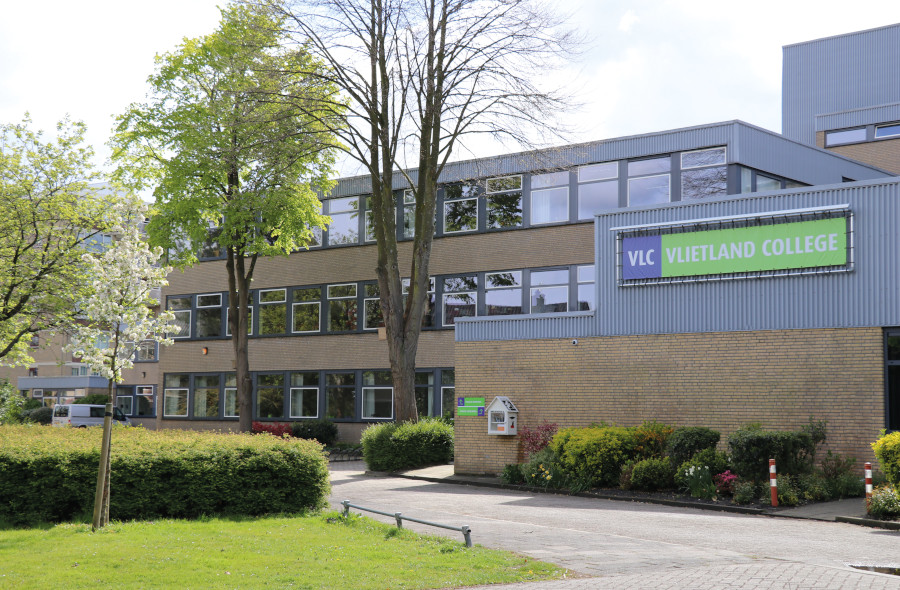

Welkom op mijn website!
Ik ben Chris Siera en ik heb deze website gemaakt.
Ik ben 16 jaar oud en ik woon in Leiden. Mijn hobby's zijn voetbal en gamen. Ik woon tegenover mijn school samen in een gezin van 5.
Ik zit op het VlietlandCollege en ik zit in het 5e jaar van VWO.
Deze website heb ik gemaakt voor een informatica opdracht. Tijdens het maken heb ik over HTML en CSS geleerd.
